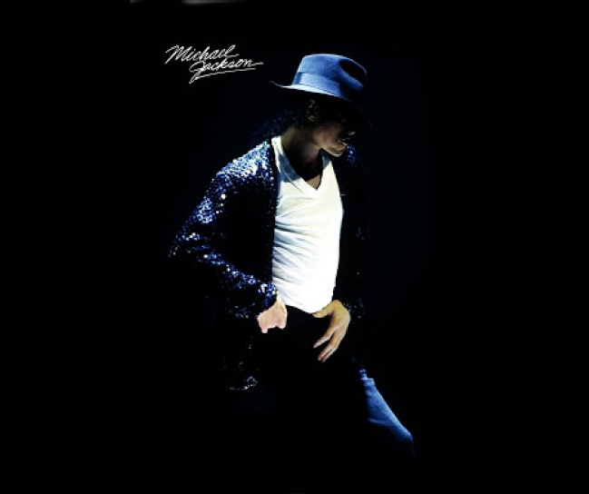

playlist


Michael was born on August 29, 1958 in the family of Joseph (1928–2018) and Catherine (born 1930) Jackson in the city of Gary (Indiana). He was the eighth of ten children. Jackson claimed that his father repeatedly humiliated him morally and physically. However, he respected his father’s strict discipline, which played a big role in Jackson’s success. In one of the clashes with his father, described by Michael's older brother Marlon, the father, holding him upside down, struck on the back and buttocks. One night, when Michael was sleeping, his father sneaked into his room through a window. He was in a frightening mask, screaming and roaring. Joseph explained his act by saying that he wanted to teach his children to close a window before going to bed. Four years later, Michael admitted that he suffered from nightmares in which he was abducted from the bedroom. In 2003, Joseph admitted to the BBC that he beat Michael when he was a child.
For the first time, Jackson spoke openly about the humiliations he had to endure as a child in an interview with Oprah Winfrey in 1993. He said that in childhood he often cried from a feeling of loneliness and vomited after talking with his father. In another loud interview, “Life with Michael Jackson,” during a story about childhood violence, the singer covered his face with his hand and began to cry. Jackson recalled that Joseph was sitting on a chair with a belt in his hand when he was rehearsing with his brothers, and that "if you did something wrong, he will bring you to tears, he will really get you."
We are fans of Michael Jackson. We sincerely love and respect him. If you are the same fan who loves pop music and wants to fit into our community, go to the "Contacts" tab. We are waiting for you and sincerely hope to satisfy your wishes. Prepare all the necessary ingredients. Fry the lightly chopped onion until golden. Add minced meat to the onion and fry all together until the meat is ready. Add salt and pepper to taste. When the stuffing is ready, add 1 pack of Torchin dressing to it. Cook over low heat for about 10 minutes. To prepare bechamel sauce, you need to melt the butter in a thick-walled bowl over low heat, add flour and stir. Add cold milk to the hot mixture (it is called ru), stirring thoroughly. At this time, it is better to remove the dishes from the fire. When all the milk has been added, put the sauce on a small fire and cook, stirring constantly, for about 5 minutes. When the sauce thickens, add salt and pepper and remove from heat.